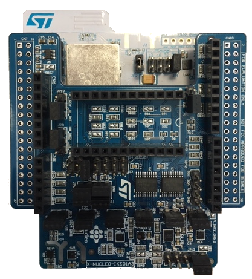

Release Notes for Projects of FP-SNS-MOTENVWB1 Function Pack
Copyright © 2019 STMicroelectronics
License
This software package is licensed by ST under Software License Agreement SLA0055, the “License”; You may not use this component except in compliance with the License. You may obtain a copy of the License at:
Purpose
FP-SNS-MOTENVWB1 is an STM32 ODE function pack which lets you connect your IoT node to a smartphone via BLE and use a suitable Android™ or iOS™ like the ST BLE Sensor app (Version 4.4.3 or later) to view real-time environmental sensor data and motion sensor data.
The package also enables advanced functionality such as sensor data fusion and accelerometer-based real-time activity recognition. This package, together with the suggested combination of STM32WB and ST devices can be used to develop specific wearable applications, or smart things applications in general.
The software runs on the STM32WB microcontroller and includes all the necessary drivers to recognize the devices on the STM32WB55 Nucleo-68 (P-NUCLEO-WB55.Nucleo) development board and MEMS expansion board (X-NUCLEO-IKS01A3).
The FP-SNS-MOTENVWB1 includes the STM32CubeMX project file (MOTENV1_IKS01A3_WB55RG.ioc) for the graphical visualization of the STM32WB MCU pins, peripherals and middleware configuration.
Notice that when regenerating the projects with STM32CubeMX, you should have the .extSettings file specifying additional project settings at the same level of the MOTENV1_IKS01A3_WB55RG.ioc file Since Middleware libraries providing MEMS features come with different build for different toolchains, you need to use specific .extSetting file.
FP-SNS-MOTENVWB1 software features:
- Complete middleware to build applications using inertial and environmental sensors, leveraging Bluetooth Low Energy for communication of sensors data
- MotionAR (iNEMOEngine PRO) software provides real-time activity recognition Release Notes
- MotionCP (iNEMOEngine PRO) software provides carry position recognition Release Notes
- MotionFX (iNEMOEngine PRO) real-time motion-sensor data fusion Release Notes
- MotionGR (iNEMOEngine PRO) software provides gesture recognition Release Notes
- MotionID (iNEMOEngine PRO) software provides real-time Motion Intensity recognition Release Notes
- MotionPM (iNEMOEngine PRO) software provides pedometer Release Notes
- Free user-friendly license terms

Here is the list of references to user documents:
- UM2559 : Getting started with the STM32 Nucleo and the X-NUCLEO-IKS01A3 STM32 motion MEMS and environmental sensor expansion board
- UM2435 : Bluetooth® Low Energy and 802.15.4 Nucleo pack based on STM32WB Series microcontrollers
- stm32cube : STM32Cube
- stm32nucleo : STM32 Nucleo boards
- x-nucleo : STM32 Nucleo expansion boards
Update History
Main Changes
First release
| Headline |
|---|
| Compatible with the Android/iOS application (ST BLE Sensor Version 4.4.3 or later) |
| Use X-NUCLEO-IKS01A3 drivers from X-CUBE-MEMS1 V6.2.0 Release Notes |
| Use STM32WB55 drivers and middlewares from STM32CubeWB V1.2.0 Release Notes |
Contents
| Name | Version | License | Release note |
|---|---|---|---|
| IKS01A3 BSP Component | V1.1.0 | MCD-ST Liberty SW License Agreement V2 | Release Notes |
| P-NUCLEO-WB55.Nucleo BSP Component | V1.0.0 | BSD 3-Clause | Release Notes |
| STM32WBxx_HAL_Driver | V1.2.0 | BSD 3-Clause | Release Notes |
| MotionAR Activity Recognition Library | V3.0.1 | SLA0077 | Release Notes |
| MotionCP Carry Position Library | V2.0.2 | SLA0077 | Release Notes |
| MotionFX Motion Sensor Data Fusion Library | V2.3.1 | SLA0077 | Release Notes |
| MotionGR Gesture Recognition Library | V2.0.2 | SLA0077 | Release Notes |
| MotionID Motion Intensity Detection Library | V2.1.1 | SLA0077 | Release Notes |
| MotionPM PPedometer Library | V2.1.1 | SLA0077 | Release Notes |
| STM32 Middleware WPAN | V1.2.0 | SLA0044 | Release Notes |
Note: in the table above, project categories highlighted have changed since previous release.
Known Limitations
| Headline |
|---|
| None |
| Headline |
|---|
| None |
Development Toolchains and Compilers
- IAR Embedded Workbench for ARM (EWARM) toolchain V8.32.3 + ST-Link
- RealView Microcontroller Development Kit (MDK-ARM) toolchain V5.27.0 + ST-LINK
- STM32CubeIDE V1.0.2 + ST-LINK
Supported Devices and Boards
- P-NUCLEO-WB55.Nucleo
- X-NUCLEO-IKS01A3